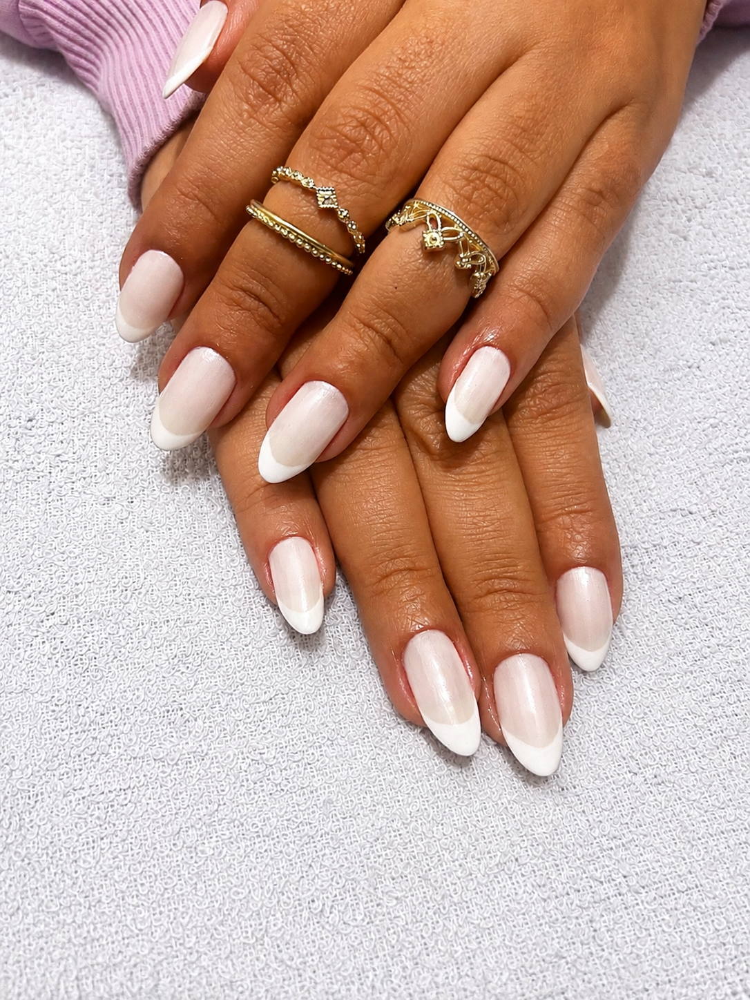

Nail designer · Centro de Sorocaba
Unhas impecáveis que refletem sua elegância e personalidade
Atendimento exclusivo no Centro de Sorocaba com técnicas avançadas em fibra de vidro, blindagem e esmaltação em gel.
Agendar Horário
Sobre Mim
Olá, me chamo Caroline Ambrizi, especialista em estética de unhas. Meu objetivo é proporcionar uma experiência de autocuidado única, unindo técnica, biossegurança e as últimas tendências do mercado para que você saia se sentindo ainda mais poderosa.
Galeria
Alguns trabalhos feitos com carinho e capricho
Meus Serviços
Alongamento em Fibra
A partir de R$ 235,00
Estrutura fina, resistente e com curvatura natural para unhas longas e elegantes.
AgendarBlindagem de Unhas
R$ 195,00
Proteção em gel sobre a unha natural para evitar quebras e garantir durabilidade extrema.
AgendarManutenção (incluso esmaltação em gel)
R$ 195,00
Renovação completa da estrutura, nivelamento e novo acabamento impecável.
AgendarEsmaltação em Gel – Mão
R$ 135,00
Brilho intenso, secagem imediata e cor intacta por semanas, sem descascar.
AgendarEsmaltação em Gel – Pé
R$ 135,00
Acabamento perfeito e duradouro com proteção e brilho espelhado.
AgendarSpa dos Pés
R$ 135,00
Protocolo profundo de hidratação, esfoliação e relaxamento para pés renovados.
AgendarO que as clientes dizem
A experiência de quem confia no nosso trabalho e atendimento no Centro de Sorocaba
"O atendimento da Carol é impecável! O espaço é super acolhedor, todos os materiais são rigorosamente esterilizados e o acabamento das unhas fica extremamente natural e duradouro. Não troco por nada!"
"Profissional incrível, pontual e muito detalhista na cuticulagem e na estrutura em gel. Saio do estúdio sempre encantada com o resultado. Recomendo de olhos fechados."
"Amei a experiência do início ao fim! Ambiente sofisticado no Centro, atendimento sem atrasos e unhas perfeitas que duram semanas intactas."
Perguntas Frequentes
Tire suas dúvidas antes de agendar
Como faço para agendar um horário?
O agendamento é feito pelo WhatsApp. Basta clicar em qualquer botão "Agendar" do site, escolher o serviço e combinar o melhor dia e horário com a Carol.
Qual o horário de atendimento?
O atendimento é de terça-feira a sábado, das 09h às 18h. Aos domingos e segundas-feiras não há atendimento.
Onde fica o atendimento?
O atendimento é na Rua Dr. Artur Martins, 137, no Centro de Sorocaba/SP. O mapa com a localização está na seção "Onde Estamos".
Quais as formas de pagamento?
Consulte as formas de pagamento disponíveis diretamente pelo WhatsApp no momento do agendamento.
Quanto tempo dura o alongamento em fibra?
Com os cuidados corretos, o alongamento em fibra costuma durar cerca de 20 a 25 dias, quando é recomendada a manutenção para manter o acabamento e a resistência.
Qual a diferença entre blindagem e alongamento?
A blindagem reforça a unha natural com uma camada de gel, sem aumentar o comprimento. O alongamento cria uma extensão com fibra para unhas mais longas.
A esmaltação em gel estraga a unha?
Não, quando aplicada e removida corretamente por uma profissional. O importante é nunca arrancar o esmalte em gel em casa, pois isso pode danificar a lâmina da unha.
Os materiais são esterilizados?
Sim. Todo o material passa por rigoroso processo de esterilização e biossegurança, para garantir a sua segurança em cada atendimento.
Quebrei uma unha. Vocês fazem o reparo?
Sim! O reparo de unha quebrada custa R$ 35,00 por unha. Chame no WhatsApp para combinar um horário.
Onde Estamos
Atendimento no coração de Sorocaba